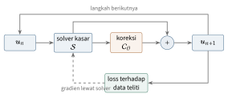
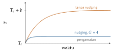

Bab 32
Model Hibrida: Fisika dan Data Bersama
Di antara semua pendekatan di Bagian V, model hibrida adalah yang paling dekat dengan cara kerja insinyur sehari-hari. Kita tidak membuang solver yang sudah teruji puluhan tahun. Kita membiarkannya mengerjakan apa yang ia kuasai, lalu memakai data untuk memperbaiki bagian yang ia kerjakan dengan buruk. Bab ini dirangkai dari kuliah metode numerik fluida, yang membahas model penutup turbulensi beserta kelemahannya, dan dari bacaan selama tugas akhir.
Di mana solver lemah
Bab 27 memperlihatkan bahwa simulasi praktis selalu memodelkan sesuatu yang tidak bisa diselesaikan: tegangan Reynolds di RANS, pusaran sub-grid di LES, gaya antara fluida dan partikel di aliran multifase, atau perpindahan panas di dekat dinding yang tidak cukup halus grid-nya. Model-model ini dirumuskan dengan asumsi yang disederhanakan dan dikalibrasi pada aliran sederhana. Ketika dipakai pada aliran yang rumit, misalnya dengan pemisahan aliran, kelengkungan kuat, atau putaran, asumsinya runtuh. Data dari simulasi yang lebih teliti, seperti DNS dan LES, atau dari percobaan, bisa dipakai untuk mempelajari model yang lebih baik (Duraisamy, Iaccarino, dan Xiao 2019).
Contoh kecil: bandul dengan gesekan yang tidak diketahui
Gagasan hibrida paling mudah dilihat pada sistem kecil. Misalkan kita tahu persamaan bandul tanpa gesekan dari Bab 21, \(\ddot\theta=-(g/l)\sin\theta\), tetapi bandul nyata melambat karena gesekan yang bentuknya tidak kita ketahui: mungkin sebanding dengan kecepatan, mungkin dengan kuadratnya, mungkin campuran. Model hibrida menulis \[\ddot\theta=-\frac gl\sin\theta+N_\theta(\theta,\dot\theta),\] dengan \(N_\theta\) jaringan kecil. Bagian yang diketahui tetap ditulis sebagai fisika, dan jaringan hanya belajar sisanya. Persamaan ini diintegrasikan dengan solver ODE biasa, dan bobot jaringan dilatih agar lintasan yang dihasilkan cocok dengan lintasan yang diukur, dengan gradien yang dibawa mundur melewati solver. Kerangka ini disebut universal differential equation (Rackauckas dkk. 2020). Setelah dilatih, \(N_\theta\) bisa dibaca kembali, misalnya dengan SINDy dari Bab 31, untuk mencari bentuk gesekan yang sebenarnya. Kalau jaringan ternyata mendekati \(-0{,}3\,\dot\theta\), kita baru saja menemukan redaman linear dengan koefisien \(0{,}3\) per detik. Jaringannya jauh lebih kecil daripada jaringan yang harus mempelajari seluruh dinamika bandul, dan di luar rentang data ia tetap dibimbing oleh suku gravitasi yang benar.
Model penutup yang dipelajari
Pendekatan paling langsung adalah melatih jaringan untuk memprediksi besaran yang hilang dari besaran yang tersedia. Untuk RANS, targetnya tegangan Reynolds, dan inputnya gradien kecepatan rata-rata. Tetapi jaringan sembarang tidak menjamin sifat fisika yang paling dasar: hasilnya harus sama tidak peduli bagaimana sistem koordinat diputar. Ling, Kurzawski, dan Templeton (2016) membangun sifat itu ke dalam arsitektur. Mereka memakai hasil klasik bahwa tensor anisotropi Reynolds \(\boldsymbol b\), dalam model viskositas turbulen umum, bisa ditulis sebagai kombinasi dari sepuluh tensor basis \(\boldsymbol T^{(n)}\) yang disusun dari tensor laju regangan \(\boldsymbol S\) dan tensor rotasi \(\boldsymbol\Omega\) yang dinormalisasi (Pope 2000): \[\boldsymbol b=\sum_{n=1}^{10}g_n(\lambda_1,\dots,\lambda_5)\,\boldsymbol T^{(n)}.\] Koefisien \(g_n\) hanya bergantung pada lima besaran invarian \(\lambda_i\), seperti \(\mathrm{tr}(\boldsymbol S^2)\) dan \(\mathrm{tr}(\boldsymbol\Omega^2)\), yang nilainya tidak berubah ketika koordinat diputar. Tensor basis sendiri berputar bersama koordinat. Jadi kalau jaringan hanya mempelajari \(g_n\) dari invarian, hasil \(\boldsymbol b\) dijamin berputar dengan benar, apa pun bobot jaringannya. Model viskositas turbulen linear dari Bab 27 adalah kasus khusus dengan hanya suku pertama, \(\boldsymbol T^{(1)}=\boldsymbol S\), dan koefisien tetap. Inilah contoh nyata inductive bias dari Bab 0: simetri tidak dipelajari dari data, tetapi dibangun ke dalam bentuk modelnya.
A priori dan a posteriori
Model penutup yang dipelajari sering tampak baik dalam uji a priori: ambil medan DNS, hitung input dan target, lalu ukur galat prediksi. Begitu model dimasukkan ke dalam solver dan simulasi dijalankan, yaitu uji a posteriori, hasilnya bisa mengecewakan atau bahkan meledak. Penyebabnya sama dengan masalah rollout di Bab 30. Selama pelatihan, model melihat input dari DNS. Selama simulasi, ia melihat input dari medan yang dihasilkan solver bersama model itu sendiri, yang distribusinya bergeser. Galat kecil mengubah medan, medan yang berubah mengubah input model, dan lingkarannya bisa memperbesar galat.
Akumulasi galat ini bisa dirasakan dengan contoh skalar. Misalkan dinamika sebenarnya \(u_{n+1}=0{,}95\,u_n\), solver kasar memberi \(0{,}90\,u_n\), dan koreksi yang dilatih a priori menambahkan \(0{,}049\,u_n\). Galat satu langkahnya hanya \(0{,}001\,u_n\), sekitar seperseribu, angka yang tampak sempurna dalam tabel uji a priori. Setelah seratus langkah, rasio hasil hibrida terhadap kebenaran adalah \((0{,}949/0{,}95)^{100}\approx0{,}90\), galat sepuluh persen. Dalam sistem nonlinear, galat seperti ini tidak hanya menumpuk tetapi juga mengubah input koreksi berikutnya, sehingga bisa lebih buruk lagi.
Obatnya adalah melatih model di dalam lingkar yang sama dengan tempat ia akan dipakai. Pendekatan solver-in-the-loop (Um dkk. 2020) menulis satu langkah simulasi hibrida sebagai \[\boldsymbol{u}_{n+1}=\mathcal S(\boldsymbol{u}_n)+\mathcal C_\theta\big(\mathcal S(\boldsymbol{u}_n)\big),\] dengan \(\mathcal S\) solver kasar dan \(\mathcal C_\theta\) koreksi yang dipelajari (Gambar 32.1).

Kalau solver ditulis dalam kerangka yang bisa diturunkan, gradien loss bisa dibawa mundur melewati beberapa langkah solver sekaligus, sehingga koreksi belajar memperbaiki galat yang muncul dari interaksinya sendiri dengan solver. Gagasan solver yang bisa diturunkan, differentiable physics, dibahas lengkap dalam buku Thuerey dkk. (2021). Kochkov dkk. (2021) memakai pendekatan serupa untuk turbulensi dua dimensi: jaringan mempelajari cara menginterpolasi nilai di sisi sel pada grid yang jauh lebih kasar, dan simulasi yang dihasilkan setara akurasinya dengan solver klasik pada grid berkali-kali lebih halus, dengan percepatan puluhan kali.
Koreksi yang tetap konservatif
Ada satu cara sederhana untuk memastikan koreksi tidak merusak hukum kekekalan. Alih-alih membiarkan jaringan menambahkan nilai sembarang ke setiap sel, kita membiarkannya mempelajari fluks tambahan di sisi-sisi sel, lalu menerapkan koreksi sebagai divergensi fluks itu, persis seperti suku-suku lain di metode volume hingga (Bab 27). Fluks yang keluar dari satu sel adalah fluks yang masuk ke tetangganya, sehingga jumlah koreksi di seluruh domain otomatis nol, kecuali di batas. Total massa atau energi tidak bisa berubah karena koreksi, apa pun bobot jaringannya. Sebaliknya, koreksi sel demi sel tanpa struktur ini bisa diam-diam menambah atau membuang energi di setiap langkah, dan dalam simulasi panjang, kebocoran kecil seperti itu menjadi galat yang besar. Pelajaran ini muncul berulang kali dalam buku ini: struktur yang benar lebih berharga daripada parameter yang lebih banyak.
Koreksi seperti ini juga perlu dibatasi agar tidak menciptakan nilai yang tidak fisis, misalnya temperatur di bawah nilai terkecil di sekitarnya atau konsentrasi negatif. Limiter dari skema konveksi orde tinggi di Bab 27 memberi cara yang teruji untuk melakukannya: fluks koreksi dipotong secukupnya agar tidak ada ekstremum baru yang muncul.
Ketidakpastian dan banyak tingkat ketelitian
Model hibrida juga cocok untuk memanfaatkan data dari sumber yang berbeda-beda ketelitian dan harganya. Simulasi kasar murah dan banyak, simulasi teliti mahal dan sedikit, percobaan paling dipercaya tetapi paling jarang. Model multi-fidelity mempelajari koreksi dari tingkat murah ke tingkat mahal, yang biasanya jauh lebih sederhana untuk dipelajari daripada solusi lengkapnya. Bentuk paling sederhananya linear: \(u_{\mathrm{teliti}}(\boldsymbol{x})\approx\rho\,u_{\mathrm{kasar}}(\boldsymbol{x})+\delta(\boldsymbol{x})\), dengan faktor skala \(\rho\) dan fungsi selisih \(\delta\) yang dipelajari, misalnya dengan Gaussian process dari Bab 15. Kalau simulasi kasar sudah menangkap pola umumnya, \(\delta\) adalah fungsi yang halus dan kecil, dan beberapa titik simulasi teliti sudah cukup untuk menaksirnya. Ketidakpastian prediksi bisa diperkirakan dengan ensemble atau model probabilistik (Bab 12), dan ini penting karena model hibrida sering dipakai justru di luar daerah data latihnya.
Asimilasi data dari Bab 14 adalah bentuk hibrida yang paling tua. Solver memberi ramalan, data memberi koreksi, dan keduanya digabung dengan bobot sesuai ketidakpastian masing-masing. Ketika model penutupnya sendiri tidak pasti, parameter model bisa ikut ditaksir dalam proses asimilasi, misalnya dengan menambahkannya ke vektor keadaan Kalman filter ensemble.
Asimilasi data dari dekat
Asimilasi data layak dibahas lebih rinci, karena ia adalah cara paling langsung untuk mendamaikan simulasi dengan pengukuran. Bentuk paling sederhana adalah nudging. Persamaan model ditambah satu suku yang menarik keadaan ke arah pengamatan, \[\frac{\,\mathrm{d}T}{\,\mathrm{d}t}=F(T)+G\,\big(T_{\mathrm{obs}}-T\big),\] dengan \(G\) kekuatan tarikan, kebalikan dari waktu relaksasi \(\tau=1/G\). Kalau \(G\) nol, model berjalan sendiri. Kalau \(G\) besar, keadaan model praktis diganti pengamatan. Di antaranya, model dan pengamatan berbagi kendali.
Contoh skalar memperlihatkan apa yang dilakukan nudging terhadap galat model. Misalkan model meluruh menuju keadaan setimbang \(T_e\) dengan laju satu per satuan waktu, tetapi punya bias \(b\), sehingga \(F(T)=-(T-T_e)+b\). Tanpa nudging, keadaan tunaknya \(T_e+b\), meleset sebesar bias. Dengan nudging ke pengamatan yang benar, \(T_{\mathrm{obs}}=T_e\), keadaan tunak memenuhi \(0=-(T-T_e)+b+G(T_e-T)\), sehingga \[T=T_e+\frac{b}{1+G}.\] Galatnya tidak hilang, tetapi diperkecil dengan faktor \(1+G\). Dengan \(G=4\), bias tinggal seperlima. Rumus ini juga memperlihatkan harganya: medan yang dihasilkan tidak lagi murni hasil model, sehingga tidak bisa dipakai sebagai bukti bahwa model sudah benar. Suku nudging itu sendiri, \(G(T_{\mathrm{obs}}-T)\), justru informatif, karena besarnya mengukur seberapa banyak model harus dikoreksi, dan di mana. Dalam praktik, nudging hanya diterapkan di sekitar titik sensor, dan informasi menyebar ke tempat lain lewat dinamika model sendiri (Gambar 32.2).

Kalman filter memilih kekuatan tarikan secara optimal dari ketidakpastian, bukan dengan tangan. Untuk model dengan jutaan variabel, matriks kovarians tidak mungkin disimpan, dan ensemble Kalman filter (Evensen 1994) menaksirnya dari sekumpulan simulasi. Jalankan \(N\) anggota ensemble dengan syarat awal atau parameter yang sedikit berbeda. Kovarians antara keadaan di sebuah titik dan nilai yang terukur di sensor ditaksir dari sebaran anggota, misalnya \(P_{xz}\approx\frac1{N-1}\sum_i(x_i-\bar x)(z_i-\bar z)\), dan gain-nya \(K=P_{xz}/(P_{zz}+R)\). Contoh dengan empat anggota: temperatur di sebuah titik bernilai \((20,22,24,26)\) dan di sensor \((30,31,32,33)\). Rata-ratanya \(23\) dan \(31{,}5\). Simpangan setiap anggota dari rata-ratanya adalah \((-3,-1,1,3)\) di titik itu dan \((-1{,}5;-0{,}5;0{,}5;1{,}5)\) di sensor, sehingga \(P_{xz}=(4{,}5+0{,}5+0{,}5+4{,}5)/3\approx3{,}33\) dan \(P_{zz}=(2{,}25+0{,}25+0{,}25+2{,}25)/3\approx1{,}67\). Dengan varians pengukuran \(R=1\), \(K\approx3{,}33/2{,}67=1{,}25\). Kalau sensor membaca \(33\), satu setengah derajat di atas rata-rata ensemble, rata-rata temperatur di titik itu dikoreksi naik \(1{,}25\times1{,}5\approx1{,}9\) derajat, walau titik itu sendiri tidak diukur. Ensemble “tahu” bahwa titik dan sensor bergerak bersama, dan memakai pengetahuan itu untuk menyebarkan informasi.
Parameter model juga bisa ikut diasimilasi. Tambahkan parameter yang tidak pasti, misalnya koefisien perpindahan panas dinding, ke vektor keadaan setiap anggota. Parameter itu tidak berubah oleh dinamika, tetapi ia berkorelasi dengan keadaan yang terukur di seluruh ensemble, sehingga koreksi Kalman memperbaruinya juga. Cara ini, yang disebut augmentasi keadaan, menjembatani asimilasi data dan kalibrasi model.
Apa yang dipelajari, dan apa yang tidak
Pola umum model hibrida bisa diringkas dalam satu kalimat: biarkan fisika menangani apa yang sudah diketahui pasti, terutama hukum kekekalan, dan biarkan data menangani apa yang dimodelkan dengan buruk. Pilihan ini punya keuntungan praktis yang besar. Karena sebagian besar dinamika dihitung oleh solver yang konservatif, model hibrida jauh lebih jarang melanggar kekekalan massa atau energi daripada model pengganti murni. Karena koreksinya kecil, ia butuh lebih sedikit data. Dan karena strukturnya jelas, kegagalannya lebih mudah didiagnosis. Ulasan Vinuesa dan Brunton (2022) dan Brunton, Noack, dan Koumoutsakos (2020) menempatkan pendekatan ini sebagai salah satu jalur yang paling menjanjikan untuk mekanika fluida komputasi.
Perkembangan riset
Contoh paling meyakinkan untuk model hibrida datang dari cuaca dan iklim. NeuralGCM (Kochkov dkk. 2024) menggabungkan solver dinamika atmosfer yang bisa diturunkan dengan komponen machine learning yang menggantikan parameterisasi proses skala kecil seperti pembentukan awan. Seluruh model dilatih ujung ke ujung dengan gradien yang dibawa melewati solver, yaitu solver-in-the-loop dalam skala planet. Untuk prakiraan satu sampai sepuluh hari, kinerjanya bersaing dengan model machine learning murni, dan untuk ensemble satu sampai lima belas hari, dengan sistem ensemble pusat prakiraan Eropa. Dengan temperatur permukaan laut yang ditetapkan, model ini juga melacak besaran iklim selama beberapa dekade, sesuatu yang sulit bagi model pengganti murni yang cenderung tidak stabil. Penulisnya juga mencatat batasnya: model ini tidak mengekstrapolasi ke iklim masa depan yang jauh berbeda, pengingat bahwa data tetap membatasi jangkauan bagian yang dipelajari.
Catatan sumber.
Bab ini dirangkai dari kuliah Numerical Methods in Fluid Mechanics (model penutup turbulensi) dan bacaan selama tugas akhir. Rujukan utama: Duraisamy, Iaccarino, dan Xiao (2019), Ling, Kurzawski, dan Templeton (2016), Um dkk. (2020), Kochkov dkk. (2021), dan Thuerey dkk. (2021).